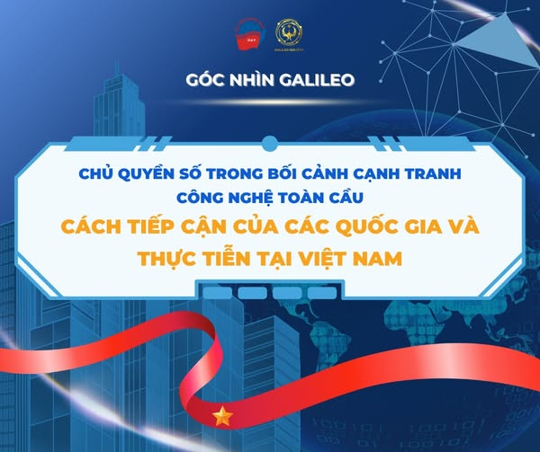

Cuộc cạnh tranh công nghệ toàn cầu đang định hình lại quan hệ quyền lực giữa các quốc gia, khi dữ liệu và hạ tầng số trở thành tài nguyên chiến lược. Trong bối cảnh đó, yêu cầu bảo vệ lợi ích quốc gia trên không gian mạng đã thúc đẩy vai trò quan trọng của chủ quyền số. Đây không chỉ là công cụ đảm bảo an ninh và quyền tự chủ trong kỷ nguyên số, mà còn là nền tảng để nhiều quốc gia xây dựng vị thế trong trật tự số đang hình thành. Nhận thức được xu thế tất yếu và tầm quan trọng chiến lược này, Việt Nam cũng đã và đang kiến tạo chủ quyền số của mình.
Trong chuyên mục Góc nhìn Galileo lần này, hãy cùng chúng mình làm rõ khái niệm và cách tiếp cận của một số quốc gia về chủ quyền số, đồng thời điểm qua những thông tin liên quan đến vấn đề chủ quyền số của Việt Nam trong quá trình xây dựng và phát triển đất nước nhé!
1 Khái niệm chủ quyền số
Hiện nay, khái niệm “chủ quyền số” được diễn giải theo nhiều cách khác nhau. Theo Diễn đàn Kinh tế Thế giới (WEF), “chủ quyền số, chủ quyền mạng, chủ quyền công nghệ và chủ quyền dữ liệu đề cập đến khả năng kiểm soát vận mệnh số của một quốc gia, bao gồm dữ liệu, phần cứng và phần mềm mà quốc gia tạo ra và dựa vào.”[1] Theo Trend Micro - tập đoàn hàng đầu về lĩnh vực an ninh mạng, “chủ quyền số là khả năng của một quốc gia, tổ chức hoặc cá nhân trong việc kiểm soát độc lập cơ sở hạ tầng số, dữ liệu và quy trình ra quyết định trong phạm vi quyền hạn của mình.”[2] Nhà nghiên cứu Luciano Floridi - một học giả uy tín trong lĩnh vực công nghệ định nghĩa “chủ quyền số quốc gia trên không gian mạng là quyền tự chủ và năng lực kiểm soát của một quốc gia đối với không gian số của mình, bao gồm dữ liệu, cơ sở hạ tầng và các hoạt động trên môi trường mạng.”[3]
Dù có sự khác biệt trong cách diễn giải, các định nghĩa trên đều chỉ ra rằng chủ quyền số phản ánh năng lực tự chủ của một quốc gia trong môi trường số, chứng minh khả năng kiểm soát và phát triển không gian mạng của quốc gia đó. Một trong những khía cạnh quan trọng của khái niệm này là chủ quyền dữ liệu (data sovereignty) - tức quyền kiểm soát và quản lý dữ liệu quốc gia, bao gồm khả năng quyết định về việc lưu trữ và xử lý dữ liệu trong lãnh thổ, thực thi bảo vệ dữ liệu của công dân và tổ chức và quản lý luồng dữ liệu xuyên biên giới.[4]
Để hiểu rõ chiều sâu của khái niệm này, cần đặt nó trong bối cảnh lý luận về chủ quyền truyền thống. Khái niệm “chủ quyền” lần đầu xuất hiện từ trật tự Westphalia (1648), nhấn mạnh đến quyền lực tối cao và tính độc lập của nhà nước trong phạm vi biên giới quốc gia.[5] Trong bối cảnh toàn cầu hóa số, mô hình chủ quyền truyền thống đang bị thách thức bởi quá trình hội nhập, kết nối toàn cầu và tái cấu trúc chuỗi liên kết. Cuộc cách mạng khoa học - công nghệ đóng vai trò là nhân tố thay đổi cách thức thực thi quyền lực và bảo vệ lợi ích chiến lược của các quốc gia. Thông qua sự phát triển của hệ thống lưu trữ dữ liệu đám mây toàn cầu, không gian ảo (cyberspace) - nơi diễn ra các hoạt động kinh tế, chính trị và văn hóa song hành với thế giới vật lý - đã được hình thành. Đặc trưng rõ nét nhất của “vùng lãnh thổ số” này là tính phi vật thể và phi địa lý của nó.[6] Các ranh giới địa lý và giới hạn truyền thống bị xóa mờ làm nảy sinh những vấn đề như phụ thuộc vào hạ tầng công nghệ nước ngoài, rò rỉ dữ liệu công dân và thách thức từ lỗ hổng pháp lý. Chính điều này buộc các nước phải tái định hình khái niệm và thiết lập cơ chế hành động về chủ quyền trên không gian số.
2 Chủ quyền số của các quốc gia trong bối cảnh cạnh tranh công nghệ toàn cầu
Chủ quyền số đang nổi lên như một yếu tố “địa chính trị” quan trọng phản ánh trực tiếp an ninh quốc gia và tiềm năng kinh tế trong kỷ nguyên số. Sự cấp bách này bắt nguồn từ mối quan ngại của các quốc gia về khả năng bảo vệ dữ liệu chiến lược và duy trì quyền kiểm soát thông tin trong bối cảnh cạnh tranh công nghệ toàn cầu gia tăng. Đặc biệt, không gian mạng đã và đang chuyển hóa thành một “chiến trường số” phức tạp, nơi các quốc gia liên tục phát triển kỹ thuật công nghệ và cạnh tranh dữ liệu số mà không bị giới hạn bởi đường biên giới vật lý thông thường. Do đó, việc khẳng định chủ quyền trên “vùng lãnh thổ số” càng trở nên quan trọng, nhấn mạnh vai trò không thể thiếu của năng lực tự chủ số trong định hình sức mạnh của mỗi quốc gia.
Trong tình hình phức tạp hiện nay, sự khác biệt trong thể chế chính trị, mô hình quản trị và trình độ phát triển kinh tế giữa các quốc gia dẫn đến sự khác nhau trong cách tiếp cận và giải quyết vấn đề liên quan đến chủ quyền số. Đơn cử, dù lựa chọn thúc đẩy cách tiếp cận thị trường tự do, Mỹ vẫn kiểm soát dữ liệu từ ngoài lãnh thổ thông qua các đạo luật như Đạo luật Sử dụng dữ liệu hợp pháp ở nước ngoài (CLOUD), cho phép cơ quan thực thi pháp luật liên bang tiếp cận dữ liệu của các công ty có trụ sở tại Mỹ, bất kể thông tin đó được lưu trữ ở đâu trên thế giới. Điều này đã làm dấy lên lo ngại quốc tế về vấn đề xói mòn chủ quyền số.[7][8] Sở dĩ, Đạo luật CLOUD được thông qua khi đang diễn ra vụ kiện kháng cáo của Tập đoàn Công nghệ Microsoft lên Tòa án Tối cao Mỹ về việc Cục Điều tra Liên Bang Mỹ (FBI) yêu cầu tập đoàn giao nộp email của một tài khoản được lưu trữ tại Ireland, đặt ra câu hỏi “liệu Washington D.C có quyền buộc các công ty Mỹ giao nộp dữ liệu được lưu trữ ở nước ngoài không?”[9]
Ngược lại với Mỹ, Trung Quốc có cách tiếp cận chặt chẽ hơn về chủ quyền số, nổi bật với chiến lược kiểm soát tập trung và chủ nghĩa dân tộc dữ liệu. Trong đó, mô hình chủ quyền số của Trung Quốc được nhà nước kiểm soát chặt chẽ thông qua Luật An ninh mạng (CSL 2017), Luật An ninh Dữ liệu (DSL 2021) và Luật Bảo vệ Thông tin Cá nhân (PIPL 2021). Điều này tạo ra tính ràng buộc nghiêm ngặt trong việc định vị dữ liệu, khả năng giám sát và tính minh bạch của hệ thống dữ liệu, đảm bảo hệ sinh thái số phục vụ các mục tiêu an ninh nội địa.[10][11]
Khác với hai mô hình trên, Liên minh châu Âu (EU) tập trung vào quyền riêng tư, đặc biệt là quyền dữ liệu cá nhân. Trong đó, EU đã tự định vị mình là khu vực dẫn đầu toàn cầu về quản trị dữ liệu dựa trên các quyền (rights-based data governance). Thông qua Quy định chung về Bảo vệ dữ liệu (GDPR), Đạo luật Dịch vụ Kỹ thuật số (DSA) và các sáng kiến như GAIA-X, EU hướng đến việc thiết lập một cơ sở hạ tầng kỹ thuật số liên kết và minh bạch, bảo vệ các quyền cơ bản của các cá nhân, tổ chức đồng thời thúc đẩy đổi mới công nghệ. Đây được xem là chiến lược bảo vệ các quyền cơ bản và thúc đẩy các giá trị của EU trong thế giới kỹ thuật số.[12][13] Trong khi đó, các nước đang phát triển như Ấn Độ, Indonesia và Việt Nam đang áp dụng các mô hình chủ quyền kỹ thuật số hướng đến tính bảo mật, ưu tiên địa phương hóa dữ liệu và kiểm soát của nhà nước đối với các luồng dữ liệu xuyên biên giới.[14]
3 Việt Nam với Chủ quyền số
Đối với Việt Nam, chủ quyền số là một trong những yếu tố then chốt để bảo vệ an ninh và phát triển của quốc gia. Trong bối cảnh toàn cầu hóa và cạnh tranh công nghệ gia tăng, chủ quyền quốc gia không còn giới hạn ở khía cạnh địa lý thông thường mà đã mở rộng sang không gian mạng. Trên cơ sở đó, an ninh quốc gia gắn liền với việc đảm bảo Việt Nam có quyền tối cao và riêng biệt đối với các vùng dữ liệu, thông tin trên không gian mạng do nhà nước quản lý và kiểm soát.[15] Đồng thời để thúc đẩy sự phát triển của nền kinh tế số - mô hình hoạt động kinh tế dựa trên nền tảng công nghệ số - việc làm chủ công nghệ và dữ liệu là điều tất yếu.[16] Nhận thức được tầm quan trọng đó, Việt Nam xác định không gian mạng là “lãnh thổ đặc biệt” cần được bảo vệ như một phần của chủ quyền quốc gia và là yếu tố then chốt để thúc đẩy sự phát triển đất nước.[17]
Việt Nam đã và đang nỗ lực xây dựng và hoàn thiện khung pháp lý toàn diện nhằm khẳng định và bảo vệ chủ quyền số của mình. Các văn bản quy phạm pháp luật quan trọng được ban hành tạo hành lang pháp lý vững chắc cho các hoạt động trên không gian mạng và quản lý dữ liệu. Đơn cử, vào năm 2018, Luật An ninh mạng 2018 (Luật số 24/2018/QH14) được Quốc hội ban hành đã thiết lập nền tảng pháp lý quan trọng cho việc bảo vệ an ninh quốc gia, đảm bảo trật tự và an toàn xã hội trên không gian mạng, qua đó đánh đấu một cột mốc quan trọng trong việc khẳng định chủ quyền của Nhà nước đối với “vùng lãnh thổ số” này.[18] Tiếp đó, vào năm 2024, Quốc hội đã ban hành Luật Dữ liệu 2024 (Luật số 60/2024/QH15), hoàn thiện khung pháp lý về quản lý và khai thác tài sản dữ liệu quốc gia. Luật quy định việc xây dựng và phát triển Trung tâm Dữ liệu Quốc gia (NDC) và Cơ sở dữ liệu Quốc gia tổng hợp (NGBD).[19] Bằng cách này, Việt Nam đã tạo ra một hệ thống quản trị dữ liệu tập trung cho phép khai thác tối đa giá trị từ dữ liệu để thúc đẩy tăng trưởng kinh tế và giảm phụ thuộc vào hạ tầng xuyên quốc gia, đồng thời đảm bảo an ninh và tự chủ trong không gian số.[20] Đây là bước đi chiến lược để biến dữ liệu thành tài nguyên quốc gia trong kỷ nguyên số.
Đặc biệt, vào ngày 16/7/2025, quyền đại diện phần vốn nhà nước tại FPT Telecom (một trong những công ty hàng đầu về viễn thông và công nghệ thông tin tại Việt Nam) đã được SCIC (Tổng công ty Đầu tư và Kinh doanh vốn Nhà nước) chuyển giao cho Bộ Công an. Động thái này được xem là một bước đi chiến lược nhằm tăng cường năng lực bảo vệ dữ liệu và chủ quyền số quốc gia. Việc chuyển giao này cho phép Bộ Công an kiểm soát chặt chẽ hơn quá trình thu thập, lưu trữ và xử lý dữ liệu quốc gia. Đồng thời, nâng cao năng lực ứng phó trước các mối đe dọa an ninh mạng và củng cố khả năng bảo vệ cơ sở hạ tầng thông tin trọng yếu của quốc gia trong bối cảnh “địa chính trị số” ngày càng phức tạp.[21] Bên cạnh đó, bảo vệ quyền riêng tư đối với dữ liệu cá nhân cũng có bước ngoặt mới khi Quốc hội vừa thông qua Luật Bảo vệ dữ liệu cá nhân (Luật số 91/2025/QH15) vào ngày 26/6/2025. Trong đó, luật này có một số quy định đáng chú ý như nghiêm cấm mua bán dữ liệu cá nhân; yêu cầu doanh nghiệp phải xóa dữ liệu cá nhân của người lao động sau khi chấm dứt hợp đồng; quy định mạng xã hội không được yêu cầu cung cấp hình ảnh, video chứa nội dung về giấy tờ tùy thân làm yếu tố xác thực nhằm siết chặt hoạt động thu thập, xử lý, lưu trữ và chuyển giao dữ liệu người dùng.[22]
Tuy nhiên, quá trình xây dựng và triển khai chủ quyền số tại Việt Nam cũng đang đối mặt với nhiều thách thức lớn. Một trong những thách thức lớn chính là sự phụ thuộc vào khoa học - công nghệ nước ngoài. Việt Nam hiện vẫn phụ thuộc phần lớn vào công nghệ nhập khẩu, bao gồm phần cứng, phần mềm, dịch vụ đám mây và Internet vạn vật (IoT) từ các quốc gia bên ngoài.[23] Sự phụ thuộc này tiềm ẩn rủi ro về kiểm soát dữ liệu và chủ quyền công nghệ bởi các nền tảng số nước ngoài có thể giới hạn quyền truy cập đối với công dân Việt Nam tùy theo biến động chính trị. Bên cạnh đó, Việt Nam vẫn chưa làm chủ được các công nghệ chiến lược, công nghệ cốt lõi như bán dẫn, trí thông minh nhân tạo (AI), dữ liệu lớn (big data), công nghệ lượng tử,... Đồng thời, hạ tầng chưa đồng bộ, nhất là hạ tầng số còn nhiều hạn chế. Hơn thế nữa, thách thức về an ninh mạng và bảo vệ dữ liệu vẫn là mối đe dọa đối với chủ quyền số của Việt Nam. Số vụ tấn công mạng, đánh cắp dữ liệu nhằm vào các cơ quan, doanh nghiệp Việt Nam và tội phạm kinh tế, công nghệ cao đang ngày càng gia tăng, vượt quá khả năng phòng thủ hiện tại của Việt Nam.[24] Cụ thể, trong năm 2024 Việt Nam ghi nhận gần một triệu cuộc tấn công từ chối dịch vụ phân tán (DDoS - Distributed Denial of Service)[25] nhằm vào các tổ chức và doanh nghiệp trong nước, tăng 34% so với năm 2023. Các cuộc tấn công mã độc tống tiền (ransomware)[26] cũng gây thiệt hại đáng kể, với tổng lượng dữ liệu bị mã hóa lên đến khoảng 10-11 triệu USD. [27][28] Trong khi phần lớn các cơ quan, doanh nghiệp trong nước chưa trang bị đủ biện pháp đảm bảo an ninh, an toàn thông tin.[29]
Bên cạnh những thách thức nêu trên, quá trình triển khai và xây dựng chủ quyền số tại Việt Nam cũng mở ra những cơ hội quan trọng, đặc biệt trong việc tăng cường kiểm soát dữ liệu trong nước và thu hút đầu tư nước ngoài. Thứ nhất, về tăng cường kiểm soát dữ liệu trong nước, việc ban hành các quy định pháp luật yêu cầu dự trữ dữ liệu trong nước, giới hạn chuyển dữ liệu xuyên biên giới và xây dựng các cơ sở dữ liệu quốc gia đã góp phần củng cố năng lực kiểm soát, bảo mật dữ liệu và giảm thiểu rủi ro từ các hoạt động gián điệp mạng. Điều này giúp Việt Nam không chỉ là nơi tiêu dùng công nghệ mà còn có thể trở thành nơi sản xuất và lưu trữ dữ liệu, qua đó nâng cao năng lực an ninh thông tin và tạo tiền đề cho sự phát triển của một nền kinh tế số độc lập hơn, tự chủ hơn.[30] Thứ hai, về cơ hội thu hút đầu tư nước ngoài, khả năng thiết lập một nền tảng bảo mật vững chắc và đạt được sự tự chủ về an ninh mạng là yếu tố then chốt để thu hút các tập đoàn công nghệ lớn đầu tư lâu dài vào hạ tầng số tại Việt Nam. Ví dụ, các tập đoàn như Alibaba đã và đang đầu tư mở rộng các trung tâm dữ liệu tại Việt Nam.[31]
Việc triển khai và xây dựng chủ quyền số ở Việt Nam là một quá trình khó khăn và phức tạp, đòi hỏi sự cố gắng và phối hợp đồng bộ nhằm vượt qua những thách thức, đồng thời tiếp tục mở ra những cơ hội phát triển lớn. Đầu tiên, đầu tư và phát triển hạ tầng số là yếu tố cốt lõi để củng cố chủ quyền số và giảm sự phụ thuộc vào nguồn cung từ bên ngoài. Để đạt được mục tiêu đó, Việt Nam cần ưu tiên xây dựng các trung tâm dữ liệu quốc gia đạt chuẩn quốc tế, đặc biệt là các trung tâm dữ liệu hỗ trợ ứng dụng AI (AI Data Center) và phát triển hạ tầng điện toán đám mây nội địa.[32] Thứ hai, công tác duy trì và nâng cao năng lực an toàn, an ninh mạng quốc gia là điều tất yếu. Việt Nam cần tiếp tục triển khai các chiến lược đảm bảo an toàn, an ninh mạng quốc gia như Quyết định số 964/QĐ-TTg của Thủ tướng Chính phủ. Mục tiêu của các chiến lược này là duy trì, nâng cao năng lực bảo vệ an ninh mạng và an toàn dữ liệu, đồng thời tăng cường năng lực ứng phó linh hoạt với các mối đe dọa từ không gian mạng.[33] Hơn thế nữa, phát triển nguồn nhân lực chất lượng cao cũng là yếu tố nền tảng đảm bảo thành công dài hạn cho quá trình triển khai chủ quyền số ở Việt Nam. Đây sẽ là cơ sở nền tảng để Việt Nam có thể vượt qua các thách thức và nắm bắt các cơ hội, từ đó đi đến khẳng định vị thế tự chủ trên bản đồ kỹ thuật số toàn cầu trong tương lai.[34]
4 Kết luận
Từ những lý thuyết ban đầu về khái niệm, đến thực tiễn đa dạng trong cách tiếp cận của các quốc gia, có thể thấy chủ quyền số đã và đang trở thành trụ cột trong chiến lược đảm bảo an ninh và phát triển kinh tế của nhiều nước, bao gồm cả Việt Nam. Dù đã có những bước đi quan trọng về nền tảng pháp lý, hạ tầng kỹ thuật và chuyển đổi số, Việt Nam vẫn phải đối diện với thách thức về năng lực công nghệ và sự phụ thuộc cơ sở dữ liệu từ bên ngoài. Trong bối cảnh cạnh tranh công nghệ toàn cầu, Việt Nam cần củng cố năng lực tự chủ công nghệ, hoạch định chính sách toàn diện, đồng thời tận dụng cơ hội hợp tác quốc tế nhằm thích nghi và bảo vệ lợi ích cốt lõi của quốc gia trong “vùng lãnh thổ số”. Việc xây dựng và triển khai chủ quyền số, duy trì không gian mạng an toàn, ổn định và tự chủ sẽ là nền tảng vững chắc cho sự phát triển bền vững, cho sự vươn mình của dân tộc Việt Nam trong thời đại ngày nay.